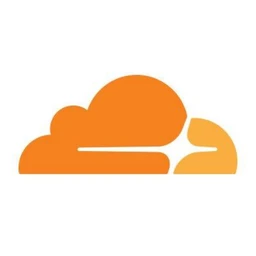

01
Vérifier ton appli avant de la mettre en ligne
Demande un audit complet : tu obtiens REPORT.md avec les failles confirmées, le détail de chacune et la liste de ce qui reste à vérifier.
Ton code→Audit en 6 étapes→REPORT.md

La skill gratuite et open source de Cloudflare qui transforme ton agent de code en auditeur de sécurité : des agents chassent les failles, d'autres les contre-vérifient, et tu reçois un rapport avec les failles confirmées.

Security Audit est une skill : un ensemble d'instructions que ton agent de code (Claude Code ou un autre agent capable de lancer des sous-agents) suit pour auditer la sécurité d'un dépôt. L'audit passe par six étapes : reconnaissance de l'architecture, chasse aux failles par des agents isolés, contre-vérification de chaque faille par un agent neuf qui essaie de la réfuter, résultats structurés, nouvelle vérification indépendante, puis rapport (REPORT.md). Chaque faille finit « confirmée », « à vérifier » ou « rejetée ». Cloudflare l'a publiée le 18 juin 2026 : c'est la version de départ de son outil interne de recherche de failles.
Une commande : npx skills add https://github.com/cloudflare/security-audit-skill --skill security-audit (ajoute --global pour tous tes projets). Puis demande « security audit this codebase » ou « audite ce code ».
RecommandéIl faut Node.js (pour les deux validateurs sans dépendance) et un agent dont le modèle gère les outils et les sous-agents en parallèle. Rapports écrits par défaut dans ~/security-audit-skill/<dépôt>/run-<N>.
RequisPour qu'il exécute le code audité, il faut un bac à sable imposé par le système (réseau coupé, environnement nettoyé, ressources limitées). Sans lui, il n'exécute rien et laisse les pistes « à vérifier ».
ConseilléDemande un audit complet : tu obtiens REPORT.md avec les failles confirmées, le détail de chacune et la liste de ce qui reste à vérifier.
Ton agent a écrit la connexion, le paiement ou l'envoi de fichiers ? Fais-le auditer par d'autres agents, qui ne valident pas leur propre travail.
« Find security vulnerabilities in ./src » : l'audit se concentre sur un dossier, plus rapide et moins coûteux.
Une simple question (« ma connexion est-elle sûre ? ») passe en mode conseil : une réponse argumentée, sans lancer tout l'audit ni écrire de rapport.
Les audits suivants reprennent les résultats précédents, revérifient le code modifié et ne comptent pas un vieux travail comme acquis.
Publiée en juin 2026 par l'équipe de recherche en sécurité de Cloudflare, la skill est la base de son outil interne de recherche de failles. Le dépôt est récent et contient peu de commits, mais il est très suivi. Les failles trouvées doivent toujours être relues par un humain.
Dépôt publié le 18 juin 2026, avec peu de commits (14 visibles sur GitHub) ; Cloudflare annonce que son outil complet suivra.
Plus de 72 000 étoiles et environ 4 100 forks sur GitHub en novembre 2026 ; nombreux articles et guides en anglais et en français.
La skill n'envoie rien elle-même et écrit ses rapports en local ; ton code passe toutefois par le fournisseur du modèle de ton agent.
Gratuite, licence MIT, publiée par Cloudflare ; aucun compte ni abonnement Cloudflare n'est demandé.
Méthode éprouvée chez Cloudflare (128 dépôts scannés), mais la version publique a moins de six mois et Cloudflare ne publie pas de taux de fausses alertes.
Comment on note : 5 critères notés sur 5, vérifiés sur GitHub, le README officiel, le blog Cloudflare et la presse spécialisée le 15 novembre 2026. La note sur 10 est la moyenne ramenée sur 10.
Bon pour : Un audit complet et contre-vérifié de tout un dépôt
Bon pour : Une revue rapide de tes derniers changements avant un commit
Bon pour : Une analyse automatique à chaque commit, avec des règles
Bon pour : Surveiller le code et les dépendances d'une équipe
Bon pour : Les équipes déjà sur GitHub qui veulent des corrections proposées
Aucun outil ne remplace une relecture humaine : vérifie chaque faille et teste chaque correctif avant de le déployer.
Code source, installation et documentation officielle : tout est là.

Chaque vidéo RepoPop t'explique un dépôt GitHub utile en moins d'une minute, avec son kit comme celui-ci.